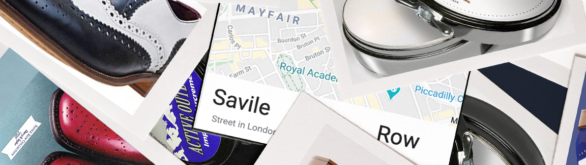
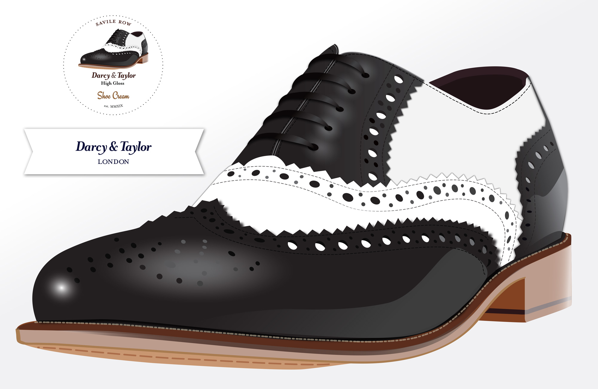
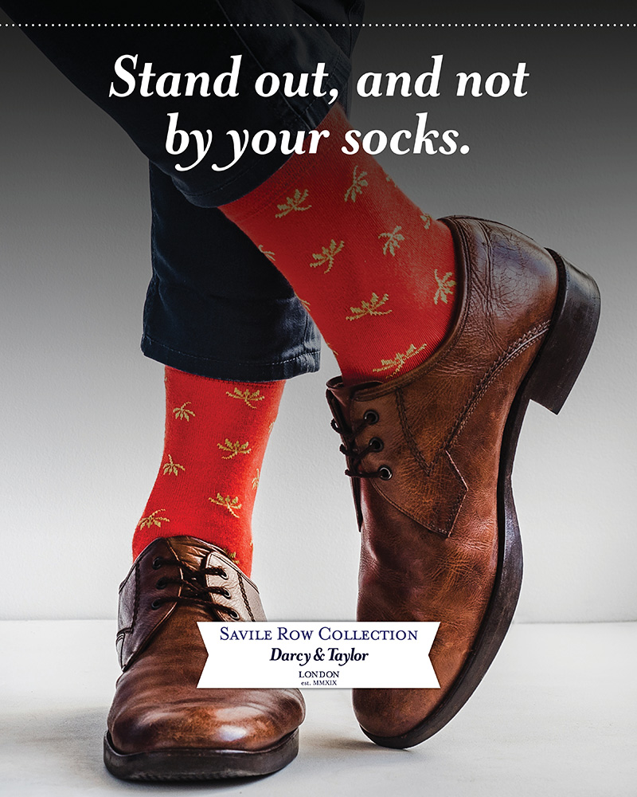
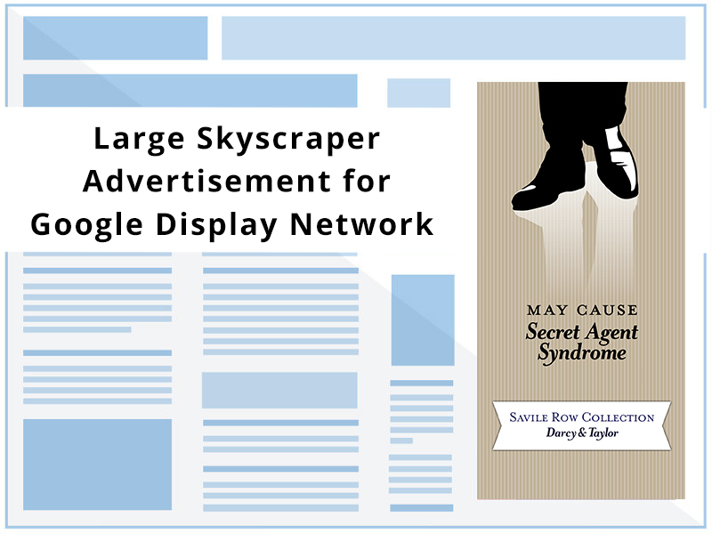
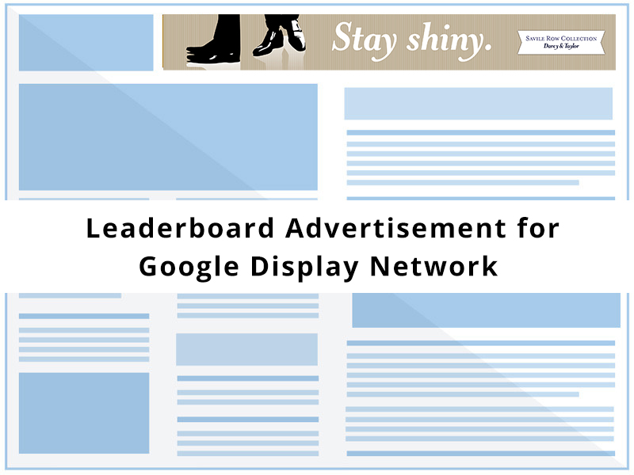
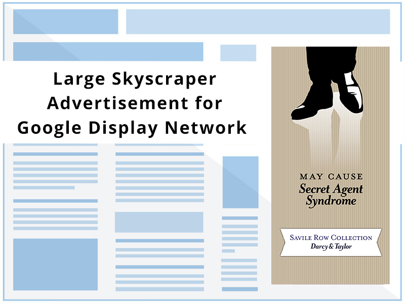
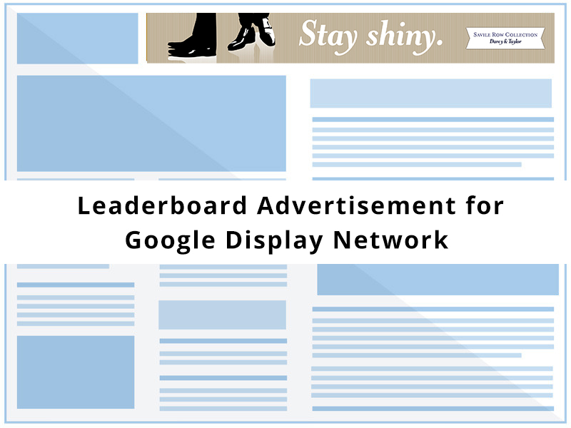

Darcy & Taylor
Illustrator, InDesign, Photoshop
This is a fictitious business brand that utilizes a photo-realistic digital illustration for its bespoke shoe and product line Savile Row Collection. This is an international retailer of fine clothing with a focus on menswear and leather footwear. Located in the Savile Row district of London since 1915, it has launched its own polish brand to reinforce a new collection of bespoke leather shoes, notable for saturated color options in traditional styles.
The target audience is men age 40+ with an annual base income $100,000/ £77,000. The advertising challenge that is met in this campaign is to encourage a new generation of men to care for their luxury shoes, and to give traditional shoe care a modern makeover.
Brogue Illustration and Branding
Advertising
I created posters to remind the target audience that opportunities remain in daily life to distinguish oneself. Web ads make a humorous connection to the target audience through references to entertainment culture (007 and Firefly fandoms).The two-fold “Call to Action" is Care for your shoes with our polish; distinguish yourself with our shoes.
 



Website: Home, Shop Polish, Location